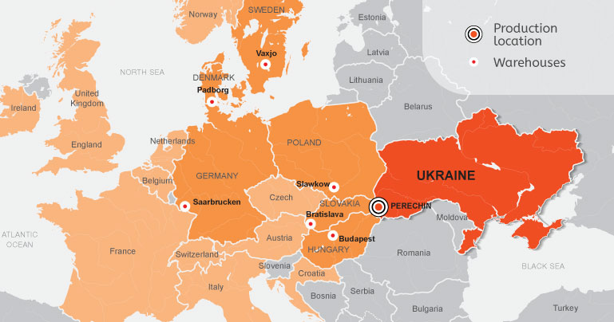

Perechin Timber and Chemical Plant is among the top leaders of Ukrainian eco-friendly manufacturers and European demand.
Perfect reputation, more than a hundred years of work experience, diverse production and most importantly eco-friendliness - all of these aspects are what we are famous for.
Europe has already assessed the quality of the charcoal products, in addition to the ability of Ukrainian businessmen to comply with European standards of production and willingness to develop, as well as embed new technologies.
We are proud to be a Supplier for the Europe's largest activated carbon plants Cabot Norit Nederland B.V., AdFiS products GmbH, one of the leaders in silicon production RW Silicium GmbH, metal manufacturers Wieland-Werke AG, Montanwerke Brixlegg AG and for many others.
Products made by the Perechin Plant are being sold from the shelves of some of the most famous European retailers: LIDL, Kaufland, Carrefour, EDEKA, TESCO. Any Ukrainian industrial enterprise would love to hold the certificates as our plant has: BSCI, PEFC, ISO.
ADVANTAGES OF THE PLANT'S INDUSTRIAL PRODUCTION
The production process in the two vertical retorts is fully controlled and automated:
- All organic matter resulting from pyrolysis does not enter the atmosphere but is burned in the boiler, thereby generating steam that is subsequently used as an energy source for the production of briquettes, ethyl acetate and other internal needs of the plant.
- Raw material is of legal origin: it is obtained through official purchases of waste from state forestry.
- Volatile, ash content, moisture content is constantly monitored, and most importantly the process allows the non-volatile carbon content to reach 93%.
The Plant operates in accordance with the standards of ISO 9001:2015, which ensures perfect management of the quality system. The BSCI certificate guarantees compliance with the highest social conditions. However, we are most proud to be the first plant in Ukraine to receive the PEFC certificate (European recognition for sustainable forest management).
In Ukraine, the products of the Plant are sold under TM Grilly, which is confidently occupying the premium segment and is the choice of consumers focused on eco-friendly products. Its use is a sign of a conscious attitude towards yourself, your environment and people around you. Quality charcoal is not a matter of price; it is a matter of health and safety.
DIRECTIONS OF DEVELOPMENT AND PROSPECTS OF MODERN PRODUCTION
The Plant sets high goals and objectives for 2020. As a part of the future plan we are considering products of deep wood processing (activated carbon production), pyrolysis fluids and firelighters, as well as cooperation with metal manufacturers.
An emission of CO2 into the atmosphere, during the metalworking process with usage of coke, provokes deepening of the environmental catastrophe. This is the very reason why the UN has declared a high level of emergency in the world. Consequently, well-known metal producers, most of them world leaders, are asking to supply charcoal as a substitute for coke.

The use of charcoal produced in accordance with environmental standards ensures that health and the environment will not be affected, but will be protected throughout the world.
Therefore, the Plant actively promotes its working methods and daily provides large volumes of supplies of raw materials for domestic needs and for industry of both Ukraine and Europe.
PERFECT REPUTATION AND GREAT EXPERIENCE
Perechin Timber and Chemical Plant occupies a strong position among the leaders of the European environmentally friendly production of charcoal. By the end of 2019, the volume of monthly production reached 4,000 tons of charcoal. 100% hardwood from Ukrainian forests is used as raw material.
More than a century of experience in industrial production of charcoal and briquettes, the absence of dangerous emissions into the atmosphere and waste water, an autonomous energy source, constant product quality control and social responsibility-these are the advantages that make it possible to open new markets not only in Ukraine, but also among conscientious entrepreneurs and consumers in Europe.